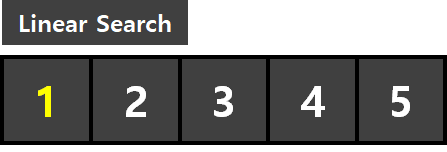
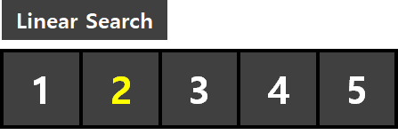
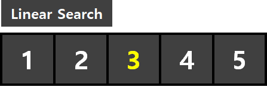

#1 선형 탐색 알고리즘이란?
#2 구현 with C/C++
#1 선형 탐색 알고리즘이란?
선형 탐색 알고리즘 [Linear Search Algorithm]이란, 단방향으로 탐색을 시작하여 원하는 데이터를 찾아내는 매우 단순한 형태의 알고리즘입니다. 구현이 아주 쉽다는 장점이 있지만 모든 데이터를 탐색해야 하기에 최악의 경우 O(N)의 시간 복잡도를 가지며 데이터가 많아질수록 효율이 떨어진다는 단점이 있습니다.
* 배열 {1, 2, 3, 4, 5} 에서 3의 위치를 선형탐색을 이용해 찾아보도록 하겠습니다.
[1번째 탐색]
0번째 원소와 3(찾고자 하는 수)를 비교합니다. 일치하지 않기에 넘어갑니다.

[2번째 탐색]
1번째 원소와 3(찾고자 하는 수)를 비교합니다. 일치하지 않기에 넘어갑니다.

[3번째 탐색]
2번째 원소와 3(찾고자 하는 수)를 비교합니다. 일치하기에 3의 위치(2)를 반환합니다.
* 만약 끝까지 탐색했는데 원하는 수가 존재하지 않았다면 -1을 반환합니다.

#2 구현 with C/C++
소스코드 역시 매우 간단하게 구현 가능합니다. 파라미터로 "데이터가 저장된 배열" , "배열의 길이", "찾고자 하는 원소" 총 3개를 넣어주면 됩니다. 탐색을 성공하면 찾고자 하는 원소가 존재한 인덱스의 번호를 리턴하고, 탐색을 실패하면 -1을 리턴합니다.
int linSearch(int arr[], int len, int x)
{
for (int i = 0 ; i < len ; ++i)
{
// 탐색 성공
if (arr[i] == x)
return i;
}
// 탐색 실패
return -1;
}